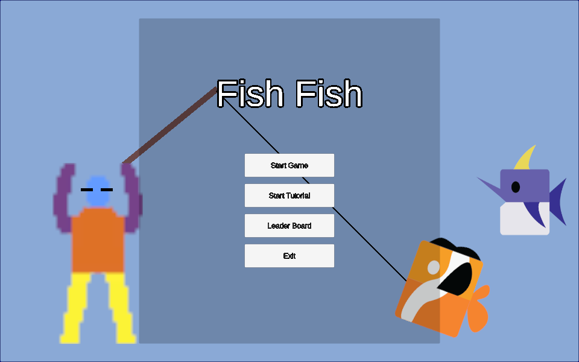
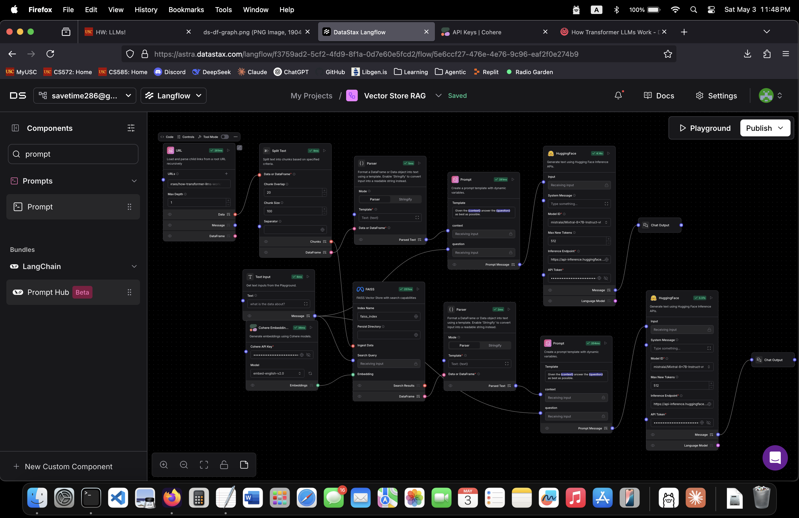

Backend & web
Demand Response Portal
An energy-data web platform, with backend APIs for managing organizations, users, and meters.
Open to early-career engineering roles
I’m Brian, a software engineer in Los Angeles.
From backend services to game systems, I turn complex problems into software you can use.

Unity · C# · Team project
A fishing-combat roguelike.
Cast, hook, reel—and keep moving.

ALSO EXPLORINGRetrieval & local AI workflows01 / Project collection
Different domains. The same curiosity.
Explore the problem, my contribution, and the code.
12 projects · Academic, personal, and team work
Backend & web
An energy-data web platform, with backend APIs for managing organizations, users, and meters.
Data & AI
A multithreaded crawler and search-evaluation workflow that turn web pages into inspectable data.
Backend & web
Java services that turn course schedules into filtered results and credit-hour summaries.
Systems & tools
Practical fixes to the tools I use: predictable cooldown ordering, configuration, and combat feedback.
Games & graphics
Work below the gameplay layer: view-frustum culling, collision, animation blending, and NPC states.
Games & graphics
A fishing-combat roguelike with a cast, hook, and reel loop—and playtest telemetry.
Data & AI
Hands-on experiments with local language models, retrieval pipelines, and connected tools.
Data & AI
A small-board Go agent that weighs candidate moves under a search-time budget.
Systems & tools
Shell scripts for host selection, network diagnostics, and everyday Unix workflows.
Backend & web
A relational library system for books, members, loans, returns, and overdue payments.
Games & graphics
An arena prototype built around pulling and launching bombs to set up explosions.
Games & graphics
A minimalist survival shooter: dodge incoming squares, fire in eight directions, and try again.
Try a broader search or another category.
02 / A little about me

I like understanding how things work—and making them work better.
My projects span academic backend services, search and AI experiments, game development, and modifications to the tools I use. I enjoy the point where a user-facing problem becomes a concrete question about code, data, or system behavior.
I’m looking for an early-career engineering role where I can contribute, learn from thoughtful teammates, and keep building. I’m open to opportunities across the United States.
M.S. in Computer Science · December 2025
B.S. in Computer Science · Cum Laude · December 2023
03 / What’s next
Have an engineering opportunity or a question about a project?